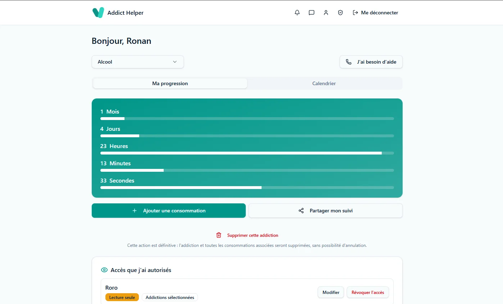

Addict helper

Contexte : Un projet personnel, à la fois utile et formateur : aider des personnes à mieux comprendre et réduire une consommation problématique, et à se connecter à des aidants ou professionnels quand elles en ont besoin. C'est aussi l'occasion de prolonger ma pratique de designer jusqu'au code, en apprenant le développement produit de bout en bout via le vibe coding.
Les utilisateurs et leurs besoins
Deux profils bien distincts à concevoir en parallèle :
- • La personne qui suit sa consommation : choisir une addiction et une date d'arrêt, visualiser un compteur d'abstinence en temps réel, consulter un calendrier mensuel de son historique, gérer plusieurs addictions en même temps.
- • L'aidant (proche, soignant, professionnel médical) : recevoir un accès dédié une fois autorisé, avec son propre tableau de bord pour suivre et soutenir la personne accompagnée.
Fonctionnalités clés
- • Compteur d'abstinence en temps réel et calendrier mensuel de suivi
- • Gestion de plusieurs addictions en parallèle, avec des presets de consommation personnalisables
- • Partage d'un lien de calendrier en lecture seule, protégé par mot de passe
- • Système d'invitation et d'autorisation des aidants, avec des permissions sélectives (lecture seule, choix des addictions visibles)
- • Messagerie intégrée (site, email, SMS) entre l'utilisateur et un aidant accepté
- • Chatbot de soutien basé sur l'IA, disponible à tout moment
Choix UX à retenir
Deux décisions qui comptent plus qu'il n'y paraît :
- • Un écart de consommation peut être noté sans réinitialiser le compteur d'abstinence, pour ne pas décourager après un faux pas.
- • L'utilisateur garde la main sur ce qu'il partage et avec qui : chaque aidant n'a accès qu'aux addictions et informations explicitement autorisées.
Mon rôle et ma démarche
Je conçois et développe ce projet seul, via le vibe coding : cadrage du besoin, UX/UI, modélisation des données, logique produit. La partie interface (React 19, TanStack Start) est générée et gérée par Lovable, que je pilote et affine avec Claude Code plutôt que d'écrire ce code moi-même à la main. Je mets en revanche davantage les mains dans Supabase : structure des tables, migrations, logique métier via des fonctions RPC. Une manière concrète de prolonger mon métier de designer jusqu'à la mise en production, sans pour autant me présenter comme développeur front.
Statut actuel
Le projet est encore en cours de conception : les fonctionnalités principales (suivi, compteur, calendrier, partage, rôle aidant, messagerie, chatbot) sont en place, mais l'application n'a pas encore d'utilisateurs réels et continue d'évoluer.
Un projet ? Un besoin ?
Discutons-en.
Si mon profil vous intéresse ou que vous souhaitez échanger, ce sera avec plaisir, soit via linkedIn (nouvel onglet), soit directement par mail à benech.r(@)gmail.com. Au plaisir !
Pour revenir à l'accueil, c'est par ici !